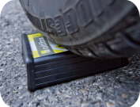

Garantie
|

|
Fonctionnement
Le produit Cultibox est garantie deux ans s'il est utilisé conformément à la notice. La durée de cette garantie s'applique à partir du jour de l'achat et elle couvre tout défaut de fabrication. C'est une garantie constructeur pièce et main d'oeuvre. Les frais de port retour des interventions effectuées sont pris en charge sur présentation des justificatifs correspondants.
Le service après-vente sous garantie est effectué uniquement sur présentation d'une preuve d'achat (par exemple la facture d'achat) et la date d'intervention doit se situer dans la période de garantie.
Les accessoires et/ou composants altérés par l'usage normal, qui peuvent être considérés par nature comme des consommables (par exemple la pile) ne sont pas garanties.
La garantie ne couvre pas les défaillances dues à une cause accidentelle, à un mauvais usage, à une négligence et en cas de modifications ou réparations effectuées par des personnes non qualifiées ou non autorisés par nous. En aucun cas, cette garantie ne peut donner droit à des dommages et intérêts.
Pour garantir une utilisation correcte du produit, l'utilisateur est tenu de respecter scrupuleusement toutes les instructions du mode d'emploi et doit éviter toute action déconseillée voir même contre-indiquée dans ce mode d'emploi.
Cette garantie est réalisée par nos soins. Cela veut dire que votre revendeur ne prend pas en charge la garantie, mais que vous devez vous adresser directement à nous.
Pourquoi avoir choisis une garantie constructeur?
La garantie constructeur procure des avantages pour tout le monde:
- Il n'y a pas d'intermédiaire entre vous et le constructeur. Le délais d'analyse et de réparation est donc plus court.
- Nous sommes directement en relation avec vous. Nous pouvons donc analyser de façon précise le défaut et dans la plupart des cas, remettre en bon état de fonctionnement le produit à distance.
Procédure
Pour bénéficier de la garantie, vous devez conserver un justificatif d'achat qui doit obligatoirement contenir la date d'achat.
La première étape est de nous contacter. Envoyer un email à support@cultibox.fr dans lequel vous indiquerez, le plus précisément possible, la nature du problème.
Nos techniciens essayent dans un premier temps de diagnostiquer le problème à distance et si possible de le résoudre.
Si cela n'est pas possible vous devrez alors nous renvoyer les éléments défectueux.
Dès réception des éléments, nous vous renvoyons des éléments équivalent pour que votre système retrouve un fonctionnement optimal le plus rapidement possible.
Ligne de conduite
Notre objectif est d'arriver dans un premier temps à une fabrication Française, puis locale et enfin en interne dans notre société.
Pour des questions de coûts et de temps, une partie de nos composants sont fabriqués dans le reste du monde. Bien sur, il y aura toujours des éléments qui seront fabriqués ailleurs: la carte SD, les câbles ou encore les composants électroniques montés sur les cartes mais toutes les opérations d'assemblages, soudures et usinages peuvent être réalisées en interne.
La prochaine étape de cet objectif est donc de réaliser le montage de certaines cartes électroniques en interne. Pour éviter des coûts de fabrication trop important nous avons besoin d'investir dans des machines.
Fabrication Française
Notre produit est fabriqué en France. Pour qu'un produit puisse être considéré comme fabriqué en France, il faut qu'au moins 45% de sa valeur "prix de départ d'usine" ait été produite en France. Mais notre réflexion va plus loin que ce seul critère.
Dans ce chapitre, vous retrouverez l'origine des composants du pack Cultibox: les parties sous-traitées, les parties réalisées par nos soins et dans quelle direction nous souhaitons progresser.
Origine des composants
LogicielEntièrement réalisé dans notre société.
Cultibox
Les composants de la Cultibox viennent d'un peu partout dans le monde:
- La carte électronique est conçue en France par nous, puis les composants sont assemblés en chine. Elle revient en France "brute d'assemblage", et nous réalisons toute une batterie de test. Les réparations et les remplacements de composants sont réalisés dans notre société.
- Le boîtier vient des états-unis (par l'intermédiaire d'un grossiste Français). Ce boîtier est ensuite usiné par notre société.
- La face imprimée avec les boutons est conçue par nos soins puis réalisé en France.
- L'assemblage des éléments et les différents tests lors de la production sont réalisés par nos soins.
Capteur
La carte électronique ainsi que le boitier sont conçus dans notre société. Le moulage des boîtiers ainsi que l'assemblage des composants sont réalisés en Chine.
L'assemblage final et les tests sont réalisés en France dans notre société.
Prises
Les prises sont acheté à des fabricants de France et de Belgique mais nous savons bien que les prises sont fabriquées en Chine.
Accessoires
Les cordons RJ12 sont achetés aux Etats-Unis, le câble USB et la carte SD en Chine, l'adaptateur secteur en France.
Emballage et notice
Conçue par nos soins (notice) et réalisés en France.
Revenir en haut de la page Revenir à la page d'achat